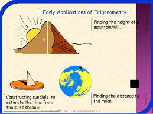
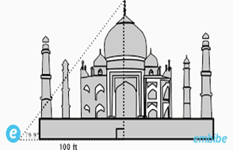
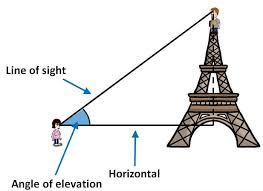

Project for Trigonometry
You are required to create a Presentation (10 mins) describing the application of Trigonometry in a Real Life challenging Scenario or in any of the sectors like Astronomy,Architecture,Engineering etc.You can simply record a video showing the application and update the same in the assignment section on Microsoft Teams.
